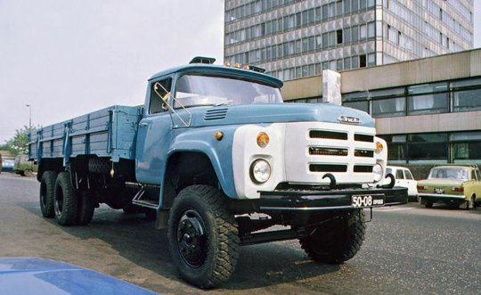
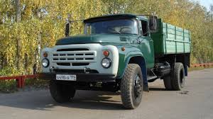

OJSC AMO ZiL, known fully as the Public Joint-Stock Company Likhachov Plant (Russian: Публичное акционерное общество Завод имени Лихачёва, romanized: Publichnoye aktsionernoye obshchestvo – Zavod imeni Likhachyova) and more commonly called ZiL (Russian: ЗиЛ), was a major Russian automobile, truck, military vehicle, and heavy equipment manufacturer that was based in Moscow. The last ZiL vehicle was assembled in 2012. The company continues to exist only as real-estate development site, on which a new urban district will be built by the LSR Group construction company.
The factory was founded on 2 August 1916 as the Moscow Automotive Society or AMO (Russian: Автомобильное Московское Общество (АМО), romanized: Avtomobilnoe Moskovskoe Obshchestvo (AMO)). The factory was completed in 1917, just before the Revolution, and was built south of Moscow near Moscow River in Tjufeleva grove. It was a modern building with the latest in American equipment and
In 2003, ZiL was transferred to the management of the Moscow Automobile Company ("MAC"), a subsidiary of the Center for Investment Projects and Programs ("CIPP"), which specializes in management consulting, crisis management and the organization of project financing.
 